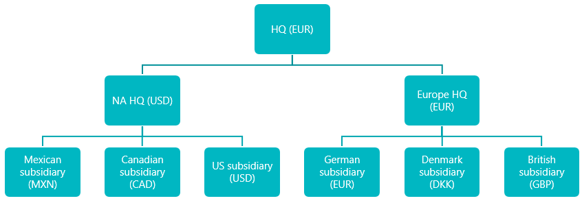
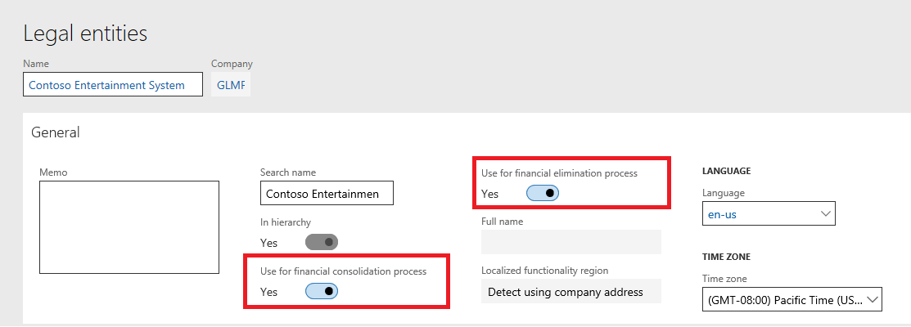
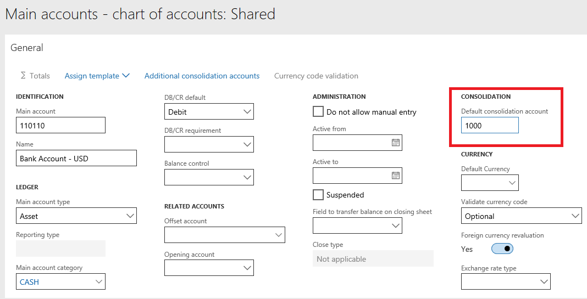
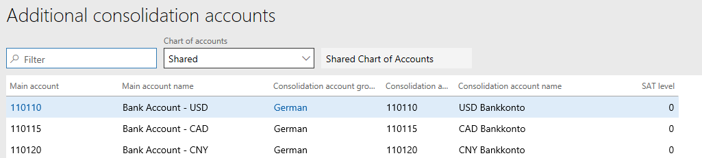
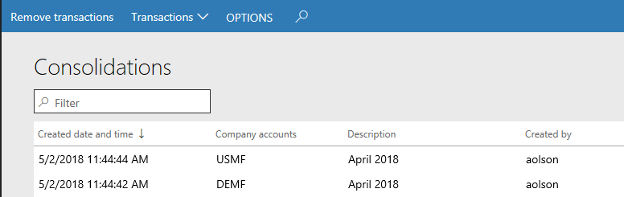
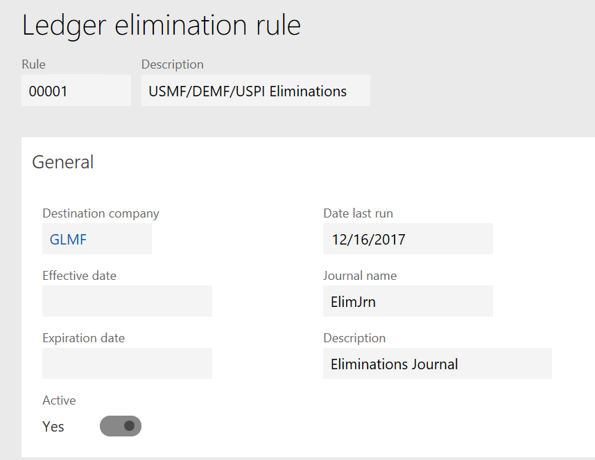
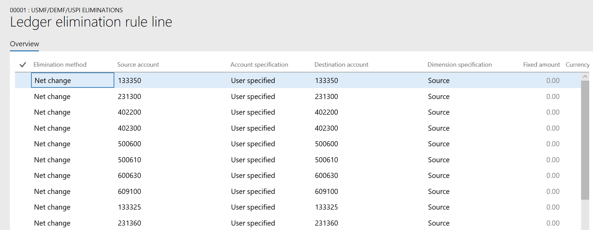

Finanzielle Konsolidierungen und Währungsumrechnung – Übersicht
Important
Dynamics 365 for Finance and Operations hat sich zu speziell entwickelten Anwendungen entwickelt, mit denen Sie bestimmte Geschäftsfunktionen verwalten können. Weitere Informationen zu diesen Änderungen finden Sie im Dynamics 365-Lizenzierungshandbuch.
Dieses Thema führt Sie durch den Ansatz von Microsoft Dynamics 365 Finance und von der Finanzberichterstattung für Konsolidierungen. Es beschreibt Szenarien, die mehrere Unternehmen, Berichte Aggregation, Löschen und Minderheitsbeteiligung umfassen. Es wird auch erklärt, wie spezielle Szenarien behandelt werden, wie beispielsweise juristische Personen mit verschiedenen Finanzzeiträumen oder verschiedene Kontenpläne.
Dieses Thema wurde für Benutzer und funktionale Berater geschrieben, und es wird davon ausgegangen, dass Leser ein allgemeines Verständnis zu Finance-Finanzberichterstellung haben. Grundeinstellungen werden nicht erfasst.
Note
Der Begriff juristische Person wird in Finance verwendet, und der Begriff Unternehmen wird in der Finanzberichterstellung verwendet. Beide Begriffe werden in diesem Thema erläutert. Allerdings für den Zweck dieses Themas sind die Bedeutungen identisch.
Zielgruppe
Dieses Thema richtet sich an Finanz- und Buchhaltungsbenutzer und Bewerbungsberater, die Finanzen und Berichterstellung und Finanzberichte verwenden möchten, um mehrere Unternehmen und Währungsdaten zu konsolidieren.
Ansatz
Finance verwendet eine eigene juristische Person, um eine Konsolidierung zu verarbeiten. Es ermöglicht Einzelinstanzkonsolidierung aber stellt eine Option bereit, um Daten aus anderen Quellen aufzufüllen. Der Konsolidierungsprozess muss jedes Mal ausgeführt werden, wenn Änderungen in den ursprünglichen juristischen Personen vorgenommen werden.
Finanzberichterstellung kann mehrere Unternehmen konsolidieren für die Berichterstellung. Zwar werden die Daten in einen Data Mart gespeichert, können aber exportiert werden und jedes Unternehmen ist der Besitzer und der Container der Daten. Der Bericht kann jederzeit, selbst jede Minute ausgeführt werden (beispielsweise). Er enthält viele zusätzliche Vergütungen, wie die Möglichkeit, allen Unternehmen und Dimensionen zu Detailinformationen anzuzeigen.
Benutzer können Finanzberichterstellung, Online-Konsolidierung oder eine Kombination nutzen. Die Entscheidung hängt von den Anforderungen des Unternehmens und den Präferenzen ihrer Wirtschaftsprüfer ab.
Konsolidierungen
Das Modul Konsolidierungen enthält Optionen für Konsolidierungen von mehreren juristischen Personen während des Konsolidierungsprozesses und für den Import oder das Exportieren des Saldos eines Unternehmens. Sie können Vorkalkulationen einrichten und Löschungserfassungen buchen.
Vorteile der Verwendung von Konsolidieren online
Debitoren, die das Konsolidierungen Modul verwenden, haben unterschiedliche Vorteile:
- Tiefe von Daten – Sie können allgemeine Berichte erstellen, die Istkosten und Budgetdaten auf der Kontoebene und der Dimensionsebene zusammenbringen.
- Dynamische Konsolidierungen - Konsolidierungen können mehrmals verarbeitet werden.
- Überwachungsfunktionen – Konten und Dimensionen werden für Analyse und Prüfung verwaltet und Salden werden nach Datum erstellt.
- Währungsumrechnung – Sie können die Kontoenbereiche und -Sätze einrichten, um von der Buchhaltungswährung des Quellunternehmens in die Buchhaltungswährung des Konsolidierungsunternehmens zu übersetzen.
- Prozeßlöschungen in einem konsolidierten oder einem Unternehmen mit Löschungseinträgen – Sie können Vorkalkulationen als einzelner Prozess bei der Konsolidierung verarbeiten und buchen. Alternativ können Sie einen Vorschlag separat ausführen.
Unterstützte Konsolidierungsszenarien
Nachfolgend sind einige der Konsolidierungsszenarien, die Onlinesupporte konsolidieren:
- Einstufige Konsolidierungen zu verschiedenen juristischen Personen
- Konsolidierungen die Löschungen beinhalten
- Minderheitsbeteiligung (Für dieses Szenario muss manuelle Berechnung und Eintrag im Unternehmen verwendet werden.)
- Mehrere Kontenpläne zu verschiedenen juristischen Personen
- Verschiedene Steuerkalender zu mehreren juristischen Personen
- Konsolidierungen, die mehrere Berichtswährungen bedingen
Einrichten von juristischen Personen
Vor dem Beginn einer Konsolidierung muss die juristische Person eingerichtet werden. Sie können Konsolidierungen beliebig oft ausführen, die Sie benötigen, und sämtliche Daten werden aus der Buchhaltungswährung des Quellunternehmens übersetzt, die in der Währung des Konsolidierungsunternehmens definiert wird. Daher muss für die nachfolgende Organisationsstruktur, wenn Sie alle nordamerikanischen Unternehmen in US-Dollar (USD) und anschließend in Euro (EUR) übersetzen müssen, die Währung des übergeordneten Unternehmens, müssen Sie mindestens zwei Konsolidierungsunternehmen haben.

In der vorherigen Organisationsstruktur müssen Sie eine juristische Person für die Konsolidierung in Nordamerika haben, weil die Konsolidierungen immer in der Buchhaltungswährung des Quellunternehmens in die Währung des Konsolidierungsunternehmens konsolidieren. Im Beispiel wenn alle Unternehmen in einer einzigen Konsolidierung enthalten sind, wird die mexikanische Tochtergesellschaft von mexikanischen Pesos MXN zu EUR und nicht von MXN zu USD und zu EUR übersetzt.
Wenn Sie die juristische Person erstellen, können Sie angeben, ob das Unternehmen für den Konsolidierungsprozess und den Löschungsprozess verwendet wird, oder nur für einen der angegebenen Prozesse. In der folgenden Abbildung wird das Unternehmen für beide Prozesse verwendet. Beachten Sie, dass Tageserfassungen Sie in einem Konsolidierungsunternehmen nicht gebucht werden können, kann aber in einem Unternehmen mit Löschungseinträgen gebucht. Daher sollten Sie ein gesondertes Unternehmen mit Löschungseinträgen haben.

Hauptkonten und Konsolidierungskontogruppen
Eine Auswahl, die Sie treffen müssen, ist, wie Sie Ihren Kontenplan konsolidieren möchten. Während des Konsolidierungsprozesses haben Sie drei Möglichkeiten für Konsolidieren von Hauptkonten.
Die erste Option verwendet die Hauptkonten von den Ausgangsunternehmen. In diesem Fall werden die einzelnen Konten aus allen Unternehmen konsolidiert. Wenn beispielsweise Bargeld Konto im USMF-Unternehmen Konto 100000 und 1100 im DEMF-Unternehmen ist, umfasst das Konsolidierungsunternehmen beide Konten. Jedes Konto besitzt den jeweiligen Saldo.
Die zweite Option ist es, ein Standardkonsolidierungskonto auf der Seite Hauptkonten festzulegen. Das Konto wird dann zum Konsolidierungskonto zugeordnet. Diese Option kann hilfreich sein, wenn Sie verschiedene Kontenpläne haben oder einem Diagramm zuordnen müssen, dass als Hauptsitz definiert wird.

Die dritte Option ist es, Konsolidierungskontogruppen zu verwenden. Sie können beliebig viele Konsolidierungskontogruppen definieren, die Sie benötigen. auf der Seite Zusätzliche Konsolidierungskonten müssen Sie das Hauptkonto vom Kontenplan dem Konto zuweisen, das Sie für diese Gruppe benötigen.

Konsolidierung, online
Wie Sie Details zu Konsolidierungen online eingeben können, erfahren Sie unter Online-Finanzkonsolidierungen.
Konsolidierungsbuchungen verwalten
Um die Ergebnisse der Konsolidierung anzuzeigen, haben Sie mehrere Optionen:
Generieren von Finanzberichten für Konsolidierungsunternehmen.
Wiederholen Sie die Listenseite Zwischenbilanz im Konsolidierungsunternehmen.
In der Liste von Konsolidierungsbuchungen auf der Seite Konsolidierungen, zeigen Sie die Salden an, die durch das Datum für jedes Ausgangsunternehmen für jede Periode erstellt werden.

Um die Konsolidierung erneut auszuführen, können Sie einfach die Konsolidierung verarbeiten. Alternativ können Sie auf der Seite Entfernt der Buchungen zuerst Konsolidierungen auswählen. Falls die Salden auf Ihrem konsolidierten Konto nicht korrekt sind, können diese Salden mithilfe der Abschlussperiodenregulierungen-Seite korrigiert werden.
Mit Import konsolidieren
Die Konsolidierung mit Importfunktionen funktioniert wie das Onlinetool für die Funktionalität der Konsolidierung. Wenn Sie die juristischen Personen auswählen, suchenb Sie in der Quelldatei, ddie Daten enthält.
Unternehmenssalden exportieren
Die Exportunternehmensaldi-Funktionalität funktioniert wie das Onlinetool für die Funktionalität der Konsolidierung. Wenn Sie die juristischen Personen auswählen, legen Sie einen Dateipfad für Ausgaben fest.
Löschungsregeln
Um Intercompany-Transaktionen zu löschen, können Sie eine Löschungsregel definieren. Sie können auch einen manuellen Löschungseintrag in einem Unternehmen vornehmen, der als Unternehmen mit Löschungseintrag aktiviert ist. Wird eine Löschungsregel erstellt, haben Sie zwei Möglichkeiten für die Löschungsmethode: Nettoveränderung und Fest.
Sie können Löschungsregeln einrichten.
Wenn wir Löschungsregeln in Finance einrichten, empfehlen wir, dass Sie eine Finanzdimension speziell für Löschungszwecke erstellen. Die meisten Debitoren nennen diese Finanzdefinion Handelspartner oder ähnlich. Wenn Sie sich entscheiden, eine Finanzdimension nicht zu verwenden, müssen Sie darauf achten, dass Sie Hauptkonten anzeigen, die nur für Intercompany-Buchungen bestimmt sind.
Die Einstellung für die Löschungen wird im Bereich Einrichten im Konsolidierungs moduls gefunden. Nachdem Sie eine Beschreibung für die Regel eingeben haben, müssen Sie das Unternehmen wählen, zu dem die Löschungserfassung gebucht wird. Dies sollte ein Unternehmen sein, das Für finanziellen Löschungsprozess verwenden in den Einstellungen für die juristische Person ausgewählt wurde.
Sie können das Datum festlegen, ab dem die Löschungsregel gültig ist und das Datum, an dem sie abläuft, entsprechend Ihren Anforderungen. Sie müssen Aktiv auf Ja setzen, wenn Sie möchten, dass sie im Löschungsvorschlagsprozess verfügbar sein sollen. Wählen Sie ein Journal aus, das einen Typ Löschung hat.

Nachdem Sie die Grundlagen definiert haben, können Sie die tatsächlichen Verarbeitungsregeln definieren, indem Sie Positionen anklicken. Es gibt zwei Optionen für Löschungen, nämlich den Nettoveränderungsbetrag eliminieren oder einen festen Betrag definieren.
Wählen Sie das Quellkonto aus. Sie können Platzhalterzeichen wie Sternchen (*) verwenden. Beispielsweise wählt 1* alle Konten aus, die mit 1 als Quelle für die Zuordnung der Daten beginnen.
Nachdem Sie Ihre Quellkonten ausgewählt haben, bestimmen die Kontospezifikation das Konto vom Zielunternehmen, das verwendet wird. Wählen Sie Quelle aus, wenn Sie dasselbe Hauptkonto verwendet werden soll, das im Konto Quelle definiert ist. Wenn Sie Benutzerdefiniert auswählen, dann müssen Sie ein Zielkonto angeben.

Das Feld Dimensionsspezifikation arbeitet wie das Feld Kontospezifikation. Wenn Sie Quelle auswählen, werden die gleichen Dimensionen im Zielunternehmen wie im Ausgangsunternehmen verwendet. Wenn Sie Benutzerdefiniert auswählen, müssen Sie die Dimensionen im Zielunternehmen angeben, indem Sie auf die Zieldimensionen Menüoption klicken. Wählen Sie Quelldimensionen und Finanzdimensionen und die Werte aus, die als Quelle der Löschung verwendet werden.
Löschungsbuchung verarbeiten
Es gibt zwei Möglichkeiten, Löschungsbuchungen zu verarbeiten. Der Transaktionsprozess kann während des Online-Konsolidierungsprozesses verarbeitet werden oder Sie können ein Löschungsjournals erstellen und den Löschungsvorschlagsprozesses ausführen. Dieser Bereich bezieht sich auf die zweite Option.
In einem Unternehmen, das als Unternehmen mit Löschungseinträgen definiert wird, wählen Sie im Konsolidierungs modul Löschungserfassung aus. Klicken Sie nach Auswahl des Erfassungsnamen auf Positionen. Um den Vorschlag auszuführen, aktivieren Sie Vorschläge > Löschungsvorschlag
Wählen Sie das Unternehmen, das die Quelle der konsolidierten Daten ist, und wählen Sie dann die Regel aus, die Sie bearbeiten möchten. Geben Sie Start- und Enddatum ein, um den Datumsbereich zu definieren, der für Löschungsbeträge gefunden wird. Geben Sie im Feld Datum für Sachkontobuchung das Datum ein, an dem die Löschungserfassung im Hauptbuch gebucht werden soll. Klicken Sie auf OK, und Sie können die Beträge anzeigen und die Erfassung buchen.
Note
Die Löschungserfassung zeigt die Beträge für Kontowerte in der Währung der ursprünglichen Buchungen, nicht in der Buchhaltungswährung. Wenn Sie Beträge in der Löschungserfassung prüfen, finden sie dieses Verhalten verwirrend.
Weitere Informationen und Beispiele finden Sie unter Löschungsregeln
Neubewertung der Währung in einem Konsolidierungsunternehmen
Wenn Sie Daten aus einer Buchhaltungswährung zu anderen konsolidieren, müssen Sie die Neubewertung der Währung noch durchführen, wenn es eine Änderung in den Wechselkursen gibt, damit die Kontosalden ordnungsgemäß neu bewertet werden. Wenn Sie ursprünglich die Daten konsolidieren, verwenden Sie die Währungsumrechnung-Registerkarte, um die ursprünglichen Wechselkurse für die Übersetzung während des Konsolidierungsprozesses auszuwählen. Nachdem ein neuer Wechselkurs eingegeben wurde (beispielsweise im nächsten Monat), müssen die Kontosalden neu bewertet werden. Die unrealisierten Gewinne oder Verluste werden dann entsprechend aktualisiert, basierend auf dem neuen Wechselkurs und -datum .
Weitere Informationen zu Währungsaufwertung in einem Konsolidierungsunternehmen finden Sie unter Währungsaufwertung in einem Konsolidierungsunternehmen.
Weitere Informationen über die Währungsaufwertung finden Sie im Modul Hauptbuch unter Neubewertung der Fremdwährung für Hauptbuch.
Weitere Informationen
- Alle Buchungsebenen werden konsolidiert, wenn die Konsolidierung verarbeitet wird.
- Löschungserfassungen können nur in die aktuelle Ebene gebucht werden.
- Nur Betriebsperiode Salden werden konsolidiert. Um den Anfangssalden anzuzeigen, müssen Sie ein Jahresende noch ausführen im Konsolidierungsunternehmen.
- Sie können Tageserfassungen in einem Konsolidierungsunternehmen buchen aber nicht in einem Konsolidierungsunternehmen.
- Regulierungen der Salden in eines Konsolidierungsunternehmens können nur mit der Abschlussperiodenregulierungen-Seite vorgenommen werden .
Vorteile für die Verwendung der Finanzkonsolidierungen und Finanzberichte für Währungsumrechnung oder zur Ergänzung von Online-Konsolidierung für konsolidierte Berichterstellung
Kunden, die Finanzberichte für die Finanzkonsolidierungen und Währungsumrechnung oder zur Ergänzung von Online-Konsolidierung für konsolidierte Berichterstellung haben verschiedene Vorteile:
- Tiefe von Daten – Sie können allgemeine Berichte erstellen, die Istkosten und Budgetdaten auf der Kontoebene und der Dimensionsebene zusammenbringen. Für Finance enthalten diese Daten von elektronischen Buchhaltungssystemen der Budgetsteuerung und der Budgetplanung.
- Dynamische Konsolidierungen – Konsolidierung können jederzeit auf jeder Ebene der Organisationshierarchie erfolgen.
- Überwachungsfunktionen beenden – Konten und Dimensionen werden für Analyse und Prüfung verwaltet und Salden werden nach Datum erstellt. Darüber hinaus bietet Finanzberichterstellung vollständige Rückbuchung zur ursprünglichen Buchung in juristischen Personen, die konsolidiert werden.
- Fortschrittliche Währungsumrechnung – Nach der Einstellung im Bereich Finance können Sie einen beliebigen Rechnungslegungsbericht in einer Berichtswährung übersetzen, die eingerichtet wurde. Sie können eine unbegrenzte Anzahl an Berichterstattungswährungen einrichten.
- Beitragslöschungen an der Quelle – Sie können einen Löschungsbericht erstellen und drucken, um Löschtransaktionen zu überprüfen. Sie können dann neue Löschungen als Standard-Intercompany-Transaktionen buchen. Sie können eine juristische Person für beliebige Buchungen verwenden, die sie nicht in Ihren juristischen Personen wünschen.
Unterstützte Konsolidierungsszenarien
Nachfolgend sind einige der Konsolidierungsszenarien, die Finanzberichterstattung unterstützen.
- Einstufige und mehrstufige Konsolidierungen zu verschiedenen juristischen Personen
- Konsolidierungen, die Organisationsstrukturen verwenden, die von den juristischen Personen erstellt werden
- Konsolidierungen die Löschungen beinhalten
- Minderheitsbeteiligung
- Mehrere Kontenpläne zu verschiedenen juristischen Personen
- Verschiedene Steuerkalender zu mehreren juristischen Personen
- Konsolidierungen, die mehrere Berichtswährungen bedingen
- Geschäftsbereichskonsolidierungen
Konsolidierte Finanzaufstellungen erstellen
Informationen zum Szenarien, in denen Sie möglicherweise Finanzaufstellungen generieren können, finden Sie unter Konsolidierte Finanzaufstellungen erstellen.